Best service photos
Up to three ranked alternatives per category. Full frames are shown together for review. Click a photo for its best-folder copy. The website and originals are unchanged.
Selection record · All reviewed photos · Coverage gaps
Visual selection rules
Palette: Neutral whites, slate equipment, natural copper and wood. Keep real blue equipment and outdoor greens; do not tint them to the brand.
Light: Prefer readable, evenly lit subjects. Keep genuine work lighting where the task remains clear.
Tone: Real projects, understandable equipment and approachable people. Friendly work portraits are useful here, despite the skill's stock-photo rule against eye contact.
Composition: Rank the clearest service view first. Add a useful detail or work view, rather than three nearly identical frames. Favor finished residential fixtures where available.
Texture: Keep the existing clean JPEG copies. Add no grain, filters or simulated detail.
Treatment: No crop or color grade applied. Crop notes and focal points guide a later website placement; they are not permission to remove equipment or alter the work.
Selection scope: Up to three distinct, useful options per reviewed category. These are ranked alternatives, not three mandatory slots on the website. Uncertain classifications stay excluded.
General plumbing / Leak detection
general-plumbing/leak-detection
No suitable, high-confidence candidate. No substitute from a different service.
General plumbing / Burst pipe repair
general-plumbing/burst-pipe-repair
No suitable, high-confidence candidate. No substitute from a different service.
General plumbing / Piping and repiping
general-plumbing/piping-and-repiping

1. 061 · Hot and cold water distribution manifold in an access recess
The tidy distribution manifold makes piping organization visible without foreground debris.
Suggested frame: 3:4. Keep the full manifold and upper copper connections; use a portrait frame instead of cutting off outlets.
Warm wood and copper with a dark manifold fit the brand palette.

2. 127 · Horizontal water and waste lines in an open wall
The supply and waste lines are readable across a wider, straighter wall view.
Suggested frame: 4:3. Trim some blank upper wall and lower soil while keeping red/blue supplies and black waste branches.
Warm wood, slate waste pipe and neutral light.

3. 044 · Blue pressure pipe in a long open yard trench
The visible pressure-pipe route gives useful outdoor context and a strong leading line.
Suggested frame: 3:4. Keep the foreground blue pipe and the receding route. This is open-trench work, not trenchless evidence.
Natural outdoor greens and soil; no artificial copper tint.
Other candidate IDs: 015, 017, 045, 046, 048, 049, 050, 062, 097, 122, 123, 124, 125, 126, 128, 129, 130, 165, 168, 169, 173, 174, 175, 179
The shortlist balances a tidy manifold, a readable wall rough-in and an outdoor pipe route. Other frames repeat these views, obscure connections with framing, or devote more space to soil and loose materials.
General plumbing / Trenchless water line repair
general-plumbing/trenchless-water-line-repair
No suitable, high-confidence candidate. No substitute from a different service.
General plumbing / Gas line repair and installation
general-plumbing/gas-line-repair-and-installation
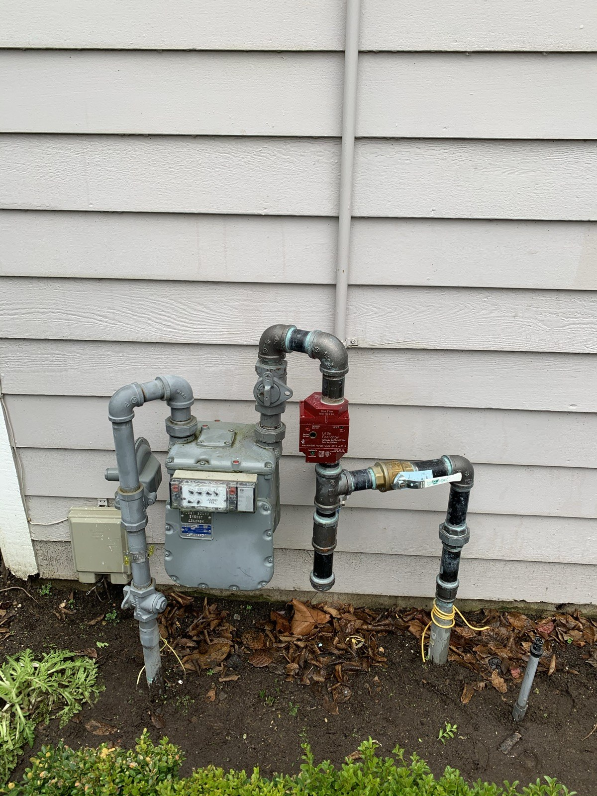
1. 088 · Gas meter with exposed connecting pipework
The full gas meter assembly reads clearly against simple siding.
Suggested frame: 3:4. Trim some top siding and ground if needed; retain the whole meter and both pipe runs.
Neutral outdoor light; keep the red shutoff distinguishable.
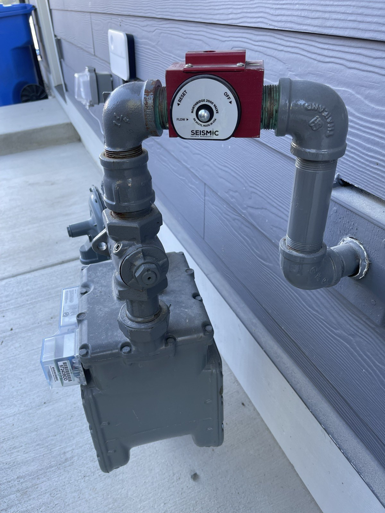
2. 018 · Exterior gas meter piping and seismic shutoff valve
A sharp close view makes the seismic shutoff and gas-pipe arrangement readable.
Suggested frame: 3:4. Keep the shutoff label and both pipe legs; retain enough meter context.
Cooler outdoor light; a later mild white-balance correction may help.
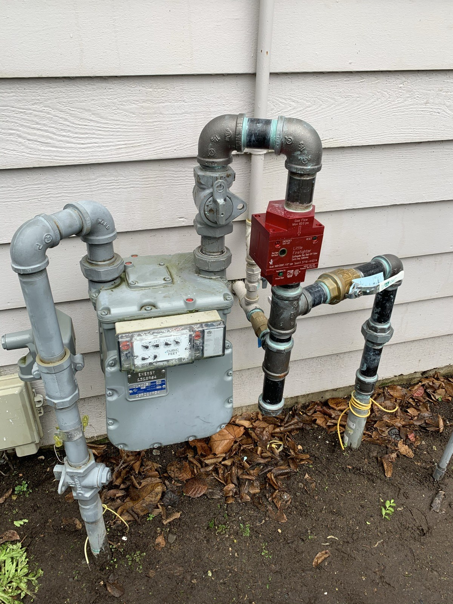
3. 089 · Gas meter and shutoff piping detail
A tighter meter/shutoff view provides readable connection detail after the overall assembly.
Suggested frame: 3:4. Keep the shutoff and meter connections. This repeats 88's setting as a detail alternative.
Similar outdoor light to 88; no grade applied.
Other candidate IDs: 087
ID 87's steep overhead angle hides more of the assembly. ID 89 is a detail alternative to 88, not a separate project.
General plumbing / Toilet repair and installation
general-plumbing/toilet-repair-and-installation
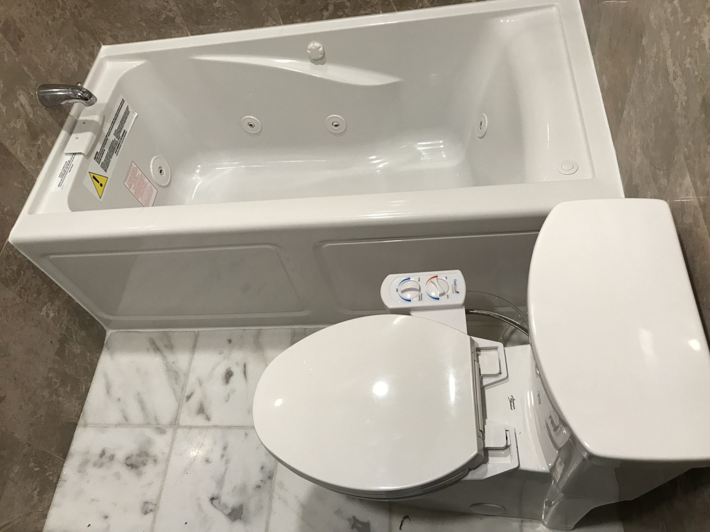
1. 189 · Toilet with bidet attachment beside a bathtub
The toilet and bidet attachment are prominent, with a clean finished-room background.
Suggested frame: 4:3. Favor the toilet and attachment; trim the left tub area if needed, without further clipping the tank.
Warm-neutral bathroom materials match the fixture set.
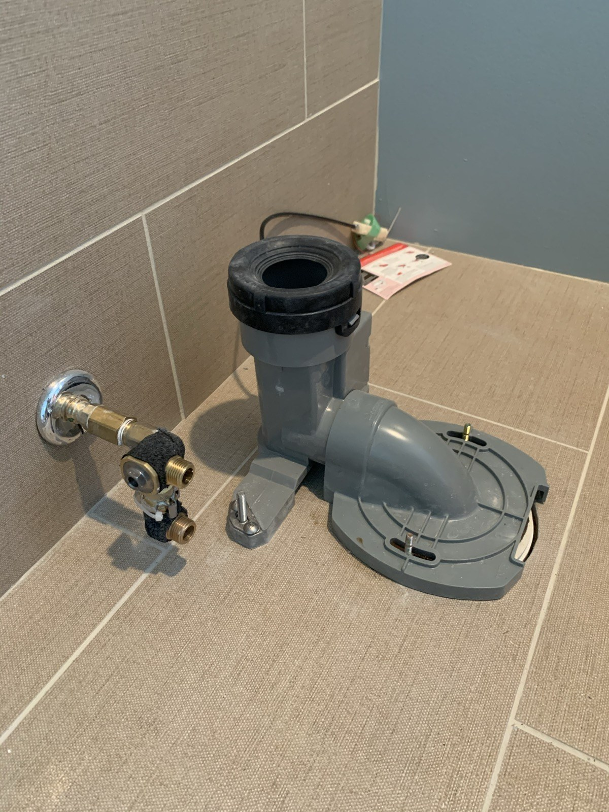
2. 040 · Toilet outlet adapter positioned over a floor flange
The toilet connection hardware is sharp and easy to distinguish from a finished fixture.
Suggested frame: 3:4. Trim excess upper wall while preserving the adapter, floor flange and supply valve.
Quiet neutral tile supports a technical detail image.

3. 184 · Bathroom with tub, shower, toilet and sink
A finished-room view ties the toilet, tub and sink together with a clear, coherent material palette.
Suggested frame: 3:4. Trim doorway edges only. Keep the service fixture visible when adapting this shared room view.
Warm stone, white fixtures and soft light; matches 186, 188 and 189.
Other candidate IDs: 039, 128, 183, 185, 187
These show the finished fixture, its connection hardware and room context. Other room views repeat the composition; ID 183 has worn cistern surfaces and little visual context, while ID 128 gives more space to soil than to the toilet connection.
General plumbing / Faucets, fixtures and sinks
general-plumbing/faucets-fixtures-and-sinks
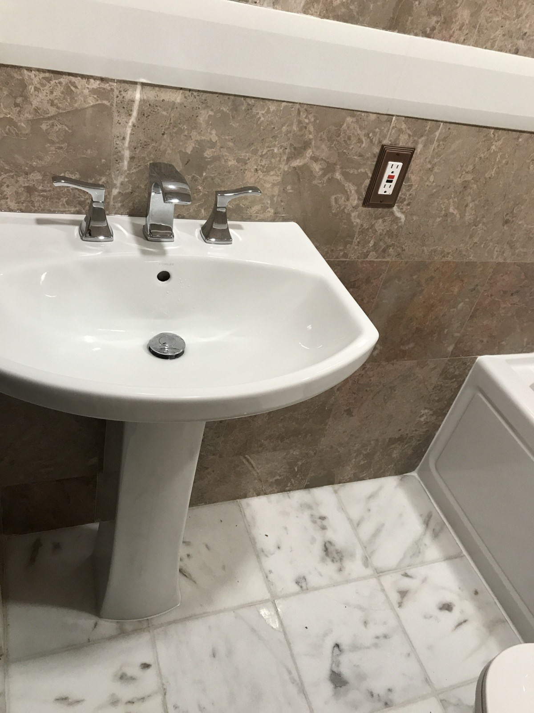
1. 186 · Pedestal sink and three-piece faucet
The finished sink and faucet are clear, well lit and framed with neutral stone and white materials.
Suggested frame: 3:4. Trim unused upper mirror area if needed; keep the faucet, basin and pedestal.
Same warm-neutral bathroom palette as 184 and 188.
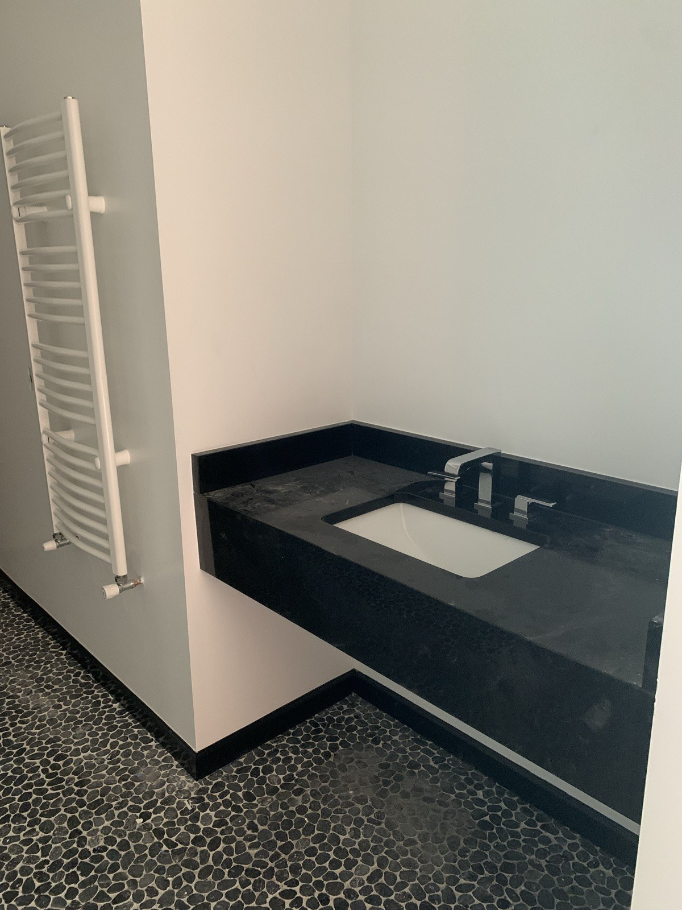
2. 014 · Bathroom sink, faucet and piped towel radiator
A tidy finished bathroom connects the service to an inviting home rather than only a utility room.
Suggested frame: 3:4. Reduce empty upper wall if needed. Keep both the sink and piped towel radiator.
Warm-neutral room; preserve the white fixtures and dark countertop.
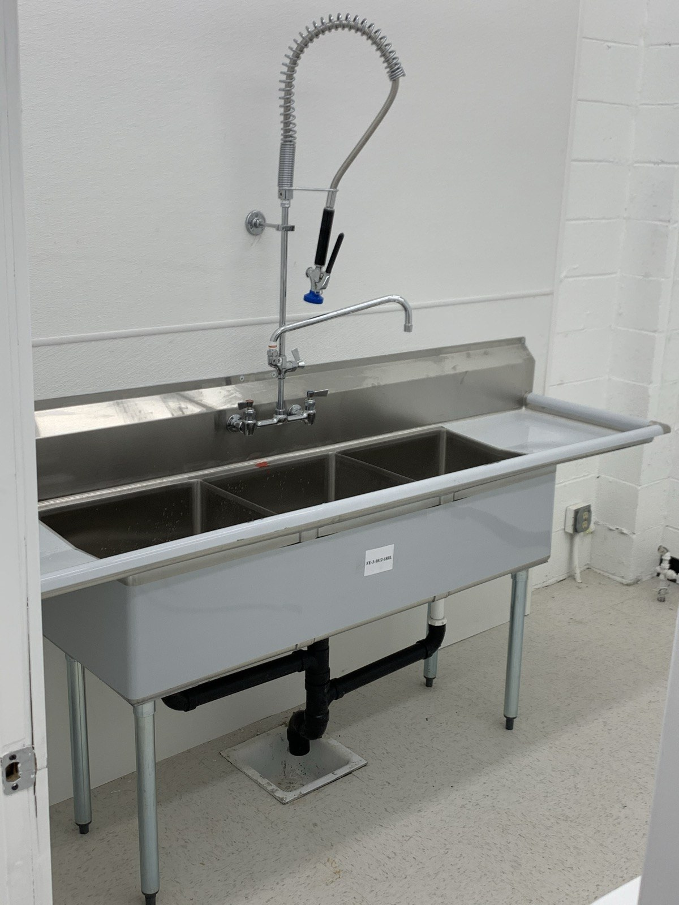
3. 066 · Three-compartment commercial sink with pre-rinse sprayer
The full utility sink and pre-rinse sprayer are clear against a quiet background.
Suggested frame: 3:4. Keep the sprayer and all sink compartments. This is the utility/commercial alternative, not the residential lead.
Neutral whites and stainless steel match the cleaner fixture images.
Other candidate IDs: 064, 065, 067, 068, 184, 185, 187, 190
The first two lead with finished home fixtures. ID 66 adds a clean utility/commercial sink alternative. Other images duplicate the bathroom view or include more empty wall, storage bins or cropped fixtures.
General plumbing / Showers and tubs
general-plumbing/showers-and-tubs

1. 188 · Bathtub and shower fittings
The shower fittings and tub are clear, with a calm finished stone background.
Suggested frame: 3:4. Keep the showerhead, controls and tub together; avoid a shallow wide crop that cuts off the fittings.
Warm stone and white fixture; retain natural reflections.
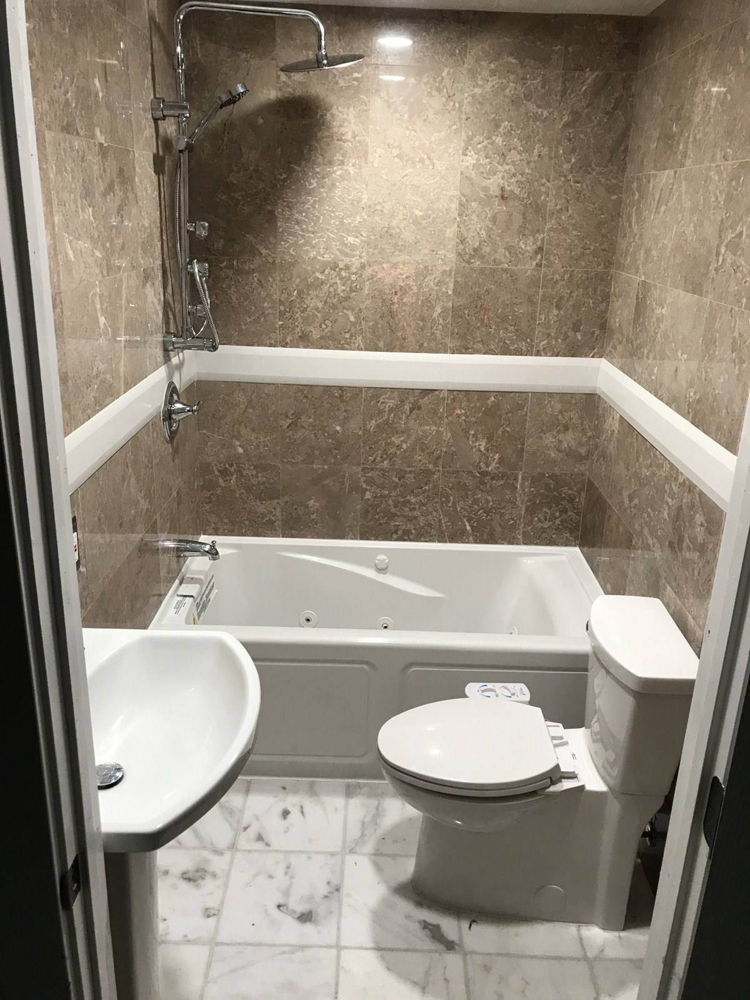
2. 184 · Bathroom with tub, shower, toilet and sink
A finished-room view ties the toilet, tub and sink together with a clear, coherent material palette.
Suggested frame: 3:4. Trim doorway edges only. Keep the service fixture visible when adapting this shared room view.
Warm stone, white fixtures and soft light; matches 186, 188 and 189.
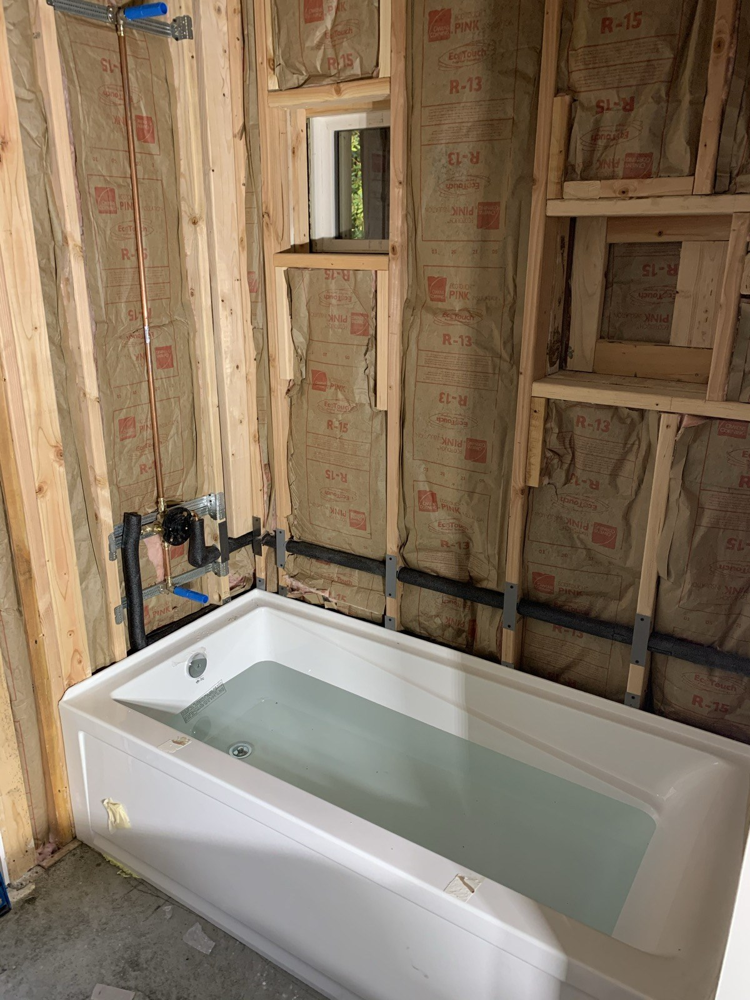
3. 121 · Bathtub and shower plumbing in an unfinished wall
The tub and visible rough-in are clearer and less cluttered than the other construction-stage tub photos.
Suggested frame: 3:4. Keep the tub and mixing connections in the same frame. This is not paired with the finished bathroom as before/after.
Natural wood and white fixture; no treatment applied.
Other candidate IDs: 016, 043, 131, 165, 166, 167, 168, 169, 185, 187, 189
Keep the fitting detail, the finished-room overview and the clearer construction-stage tub. Other construction frames contain more wrapping and debris; other finished views repeat this bathroom. These are not a verified before-and-after pair.
General plumbing / Garbage disposals
general-plumbing/garbage-disposals
No suitable, high-confidence candidate. No substitute from a different service.
General plumbing / Sump pumps
general-plumbing/sump-pumps
No suitable, high-confidence candidate. No substitute from a different service.
General plumbing / Water filtration systems
general-plumbing/water-filtration-systems

1. 028 · Water softener, UV chamber and cartridge filtration bank
The whole treatment layout is readable, with orderly copper routing and little competing clutter.
Suggested frame: 4:3. Retain the black softener, UV chamber and filter bank. A wide frame suits this system.
Neutral wall and natural wood with blue equipment; no grade needed for selection.
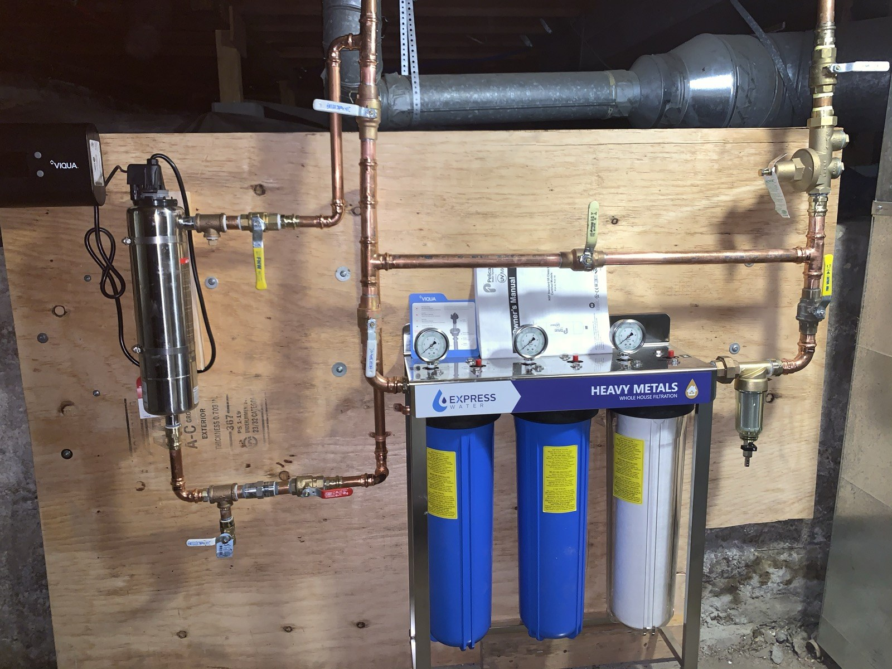
2. 013 · Cartridge filter bank and VIQUA UV treatment assembly
The UV chamber and filter housings are large, clear and framed with their copper connections.
Suggested frame: 4:3. Keep the UV chamber at left and all filter housings; avoid a centered crop that loses the chamber.
Natural copper, wood and blue housings; keep the treatment colors.

3. 033 · Worker beside water softener, filtration, UV chamber and storage tank
A clear person and complete treatment system add scale, context and an approachable human presence.
Suggested frame: 4:3. Keep the person at left, treatment equipment and storage tank at right. Do not reduce it to an anonymous equipment crop.
Warm-neutral interior; retain natural skin and equipment colors.
Other candidate IDs: 010, 011, 012, 019, 029, 058, 059, 082, 085, 152
Use a complete treatment layout, a tighter filter/UV view and a person with the equipment. Other frames repeat these installations, crop the worker or tank bottoms, or mix treatment vessels with unrelated heating equipment.
General plumbing / General plumbing: system overview
general-plumbing/system-overview
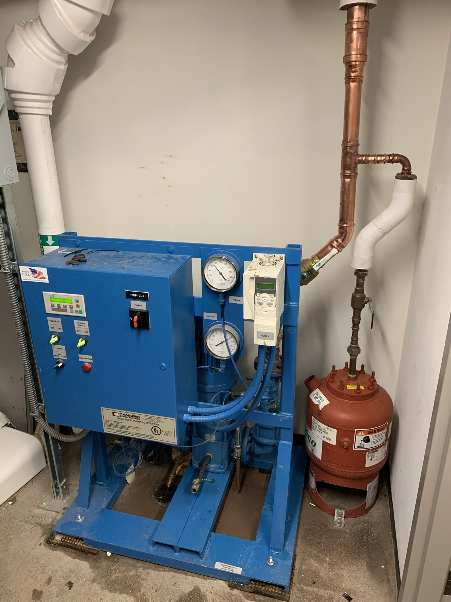
1. 092 · Pump skid and adjacent pressure vessel
The straighter overall view shows the pump skid and pressure vessel with less competing clutter.
Suggested frame: 3:4. Keep the skid and vessel together; trim some upper blank wall for a closer equipment frame.
Neutral wall, blue equipment and natural copper; no artificial recoloring.
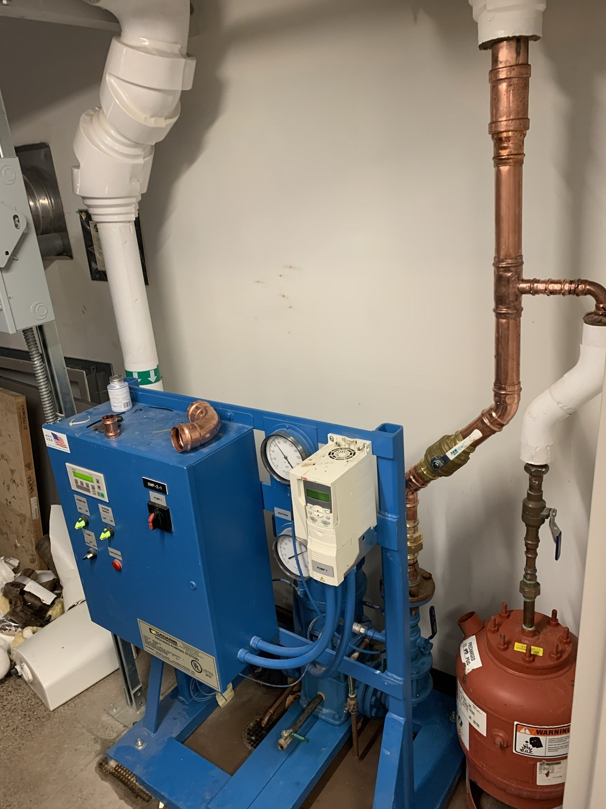
2. 091 · Pump skid with gauges, controls and pressure vessel
An oblique view shows the pump controls, gauges and adjacent pressure vessel.
Suggested frame: 3:4. Reduce empty upper wall if needed; retain controls and vessel. Alternate to the straighter view in 92.
Same blue/neutral mechanical palette as 92.
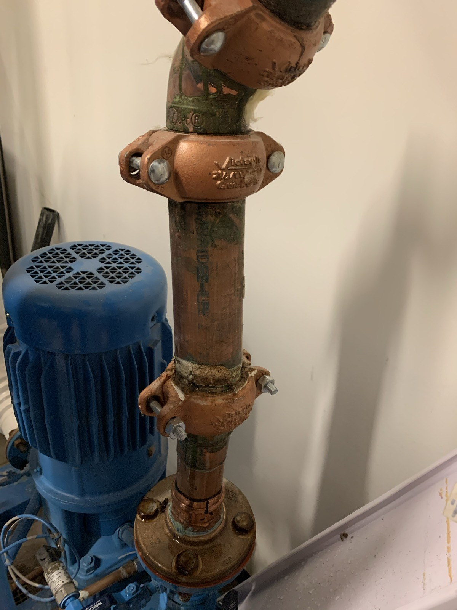
3. 090 · Vertical water pump and grooved copper pipe connections
The pump and grooved copper joints provide a clear close mechanical detail.
Suggested frame: 3:4. Keep the motor and pipe couplings; do not present the tight crop as a complete pump system.
Natural copper and blue equipment fit the neutral mechanical set.
Water heaters / Electric water heaters
water-heaters/electric-water-heaters
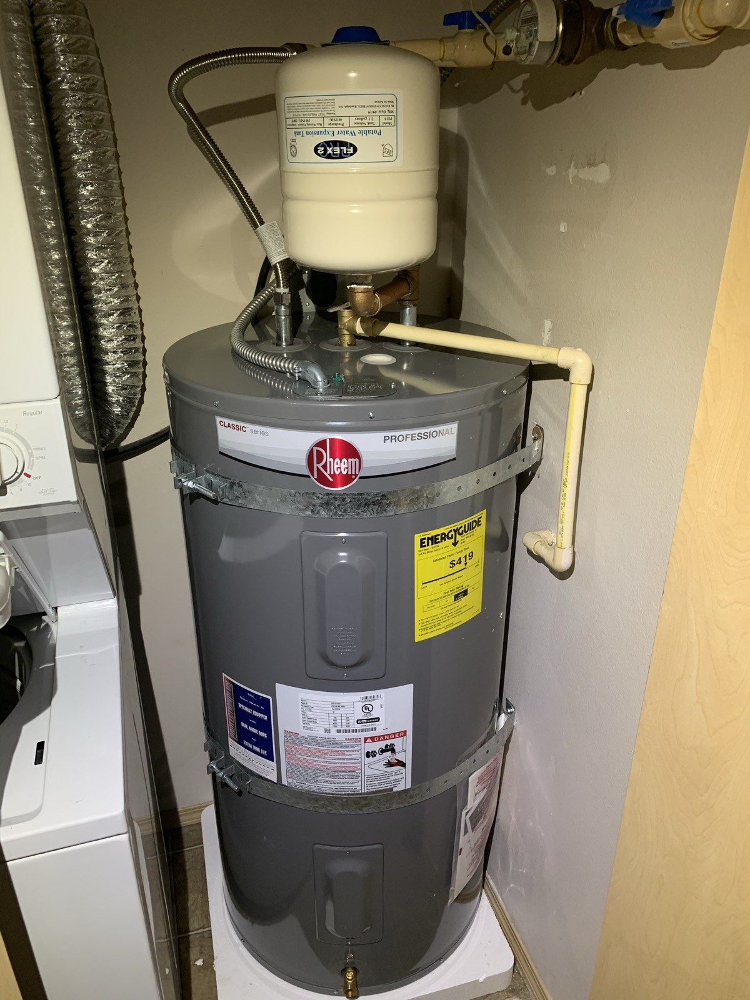
1. 095 · Electric storage water heater with expansion tank
The full electric storage heater is recognizable, sharp and framed with its expansion tank.
Suggested frame: 3:4. Keep the heater, expansion tank and lower fittings. Use a portrait slot rather than clipping the tank in a wide crop.
Warm utility light; optional mild white balance later, not a heavy filter.
Water heaters / Gas water heaters
water-heaters/gas-water-heaters
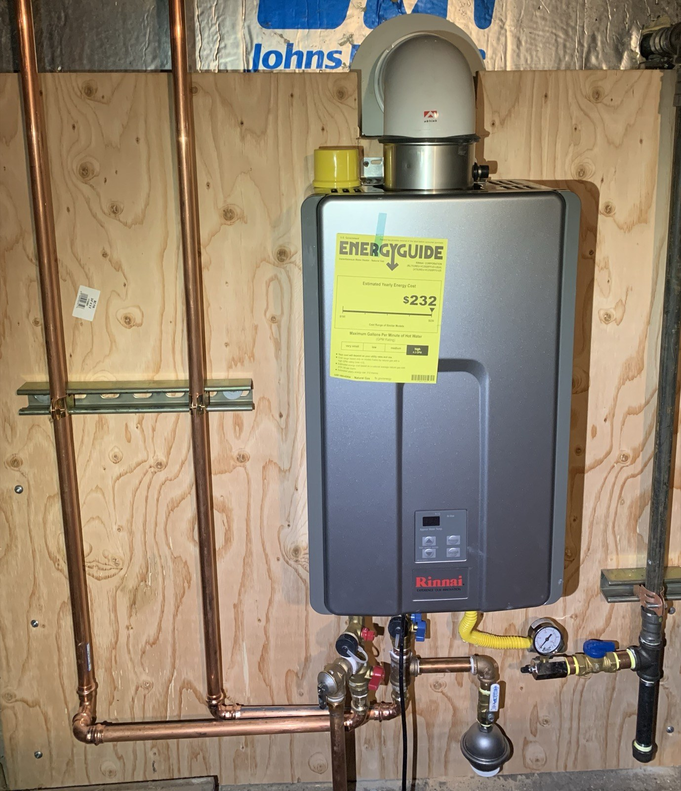
1. 132 · Natural-gas tankless water heater
The tankless gas heater and connections are large, sharp and easier to scan than the alternate installation.
Suggested frame: 3:4. Keep the cabinet, vent and lower connections. Retain the hanging equipment label rather than editing it away.
Warm wood and neutral equipment; no color change applied.
Water heaters / Tankless water heaters
water-heaters/tankless-water-heaters

1. 132 · Natural-gas tankless water heater
The tankless gas heater and connections are large, sharp and easier to scan than the alternate installation.
Suggested frame: 3:4. Keep the cabinet, vent and lower connections. Retain the hanging equipment label rather than editing it away.
Warm wood and neutral equipment; no color change applied.
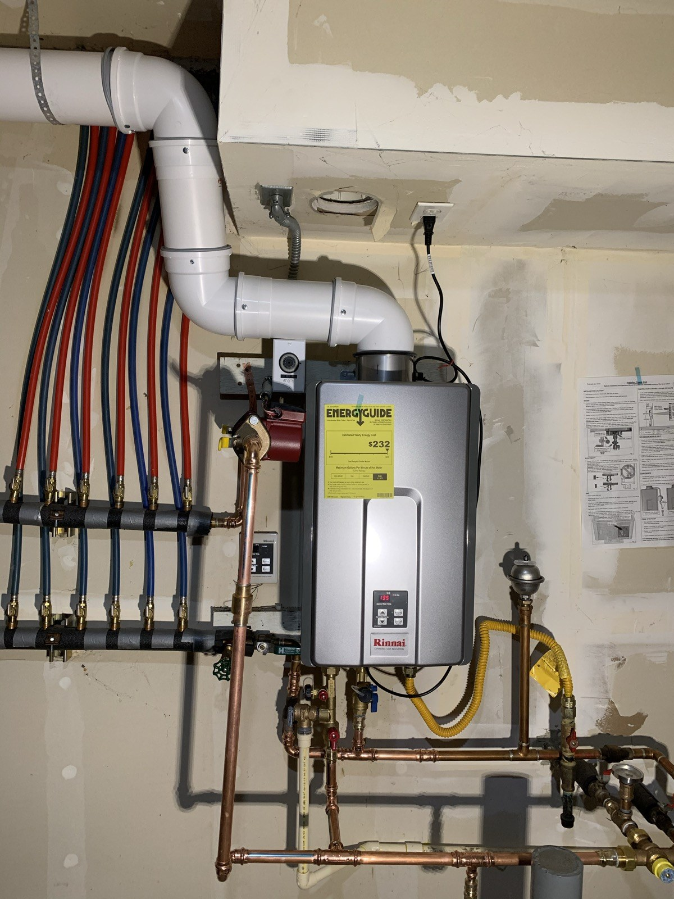
2. 097 · Rinnai tankless water heater and domestic distribution manifold
A second tankless installation shows the heater alongside domestic distribution and its connections.
Suggested frame: 3:4. Keep the heater and manifold; reduce unrelated drywall edges where the slot permits.
Neutral equipment with work-light shadows. Supporting alternative to the cleaner view in 132.
Water heaters / Heat pump water heaters
water-heaters/heat-pump-water-heaters
No suitable, high-confidence candidate. No substitute from a different service.
Water heaters / Water heaters: system overview
water-heaters/system-overview
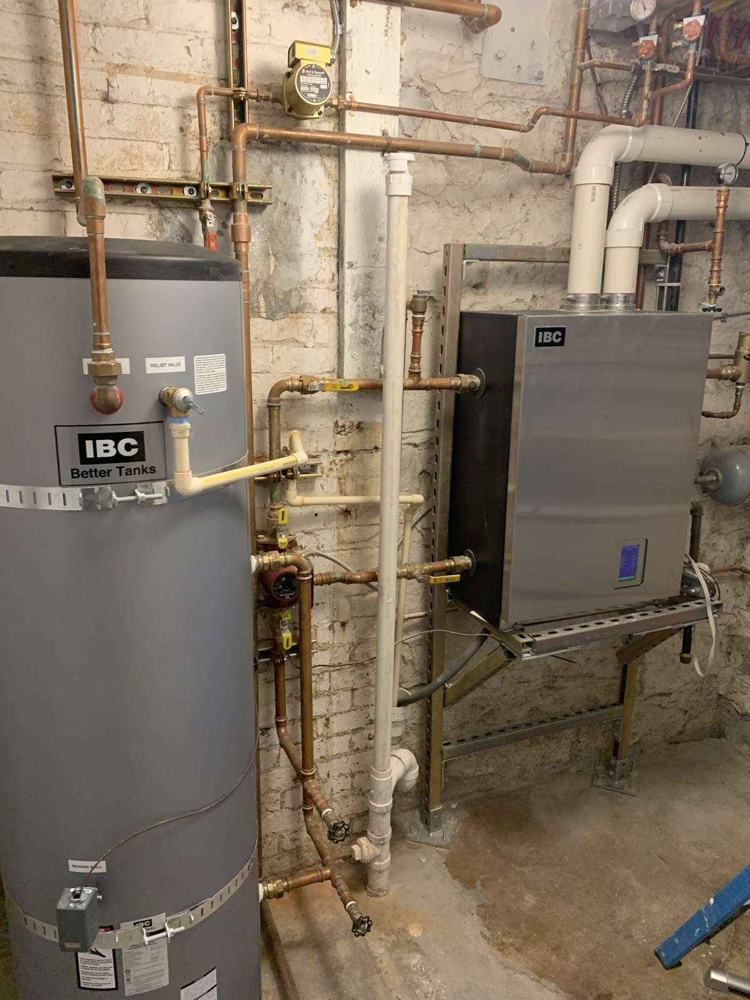
1. 071 · IBC heating appliance beside a hot-water storage tank
The storage tank and heating appliance show the relationship within a hot-water plant.
Suggested frame: 3:4. Preserve the tank at left and appliance at right. The tank edge is already cropped; use as plant context.
Warm-neutral metal and copper; keep the rough basement setting honest.

2. 176 · Worker connecting a hot-water tank
The person working at a visible storage-tank connection explains the activity without an ambiguous appliance close-up.
Suggested frame: 3:4. Keep the tank, hands and copper connection. Trim doorway margins only; the worker obscures some lower fittings.
Warm interior cast; mild neutralization may help at final placement.
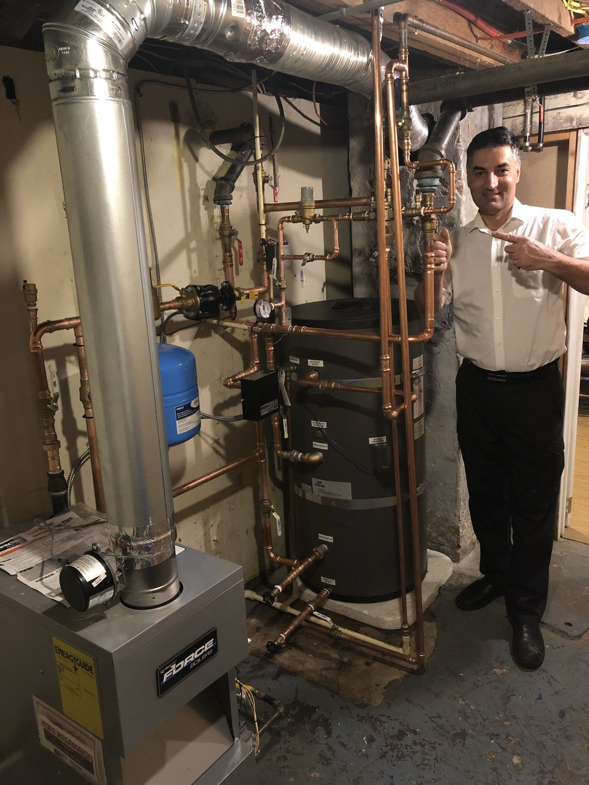
3. 109 · Technician beside a boiler and hot-water storage tank
The person, storage tank and heating plant give useful scale and an explanatory environmental view.
Suggested frame: 3:4. Retain the storage cylinder and person. Use a supporting portrait; upper ducting limits a wide crop.
Warm low light; lift exposure only in a later approved treatment, without hiding clutter.
Other candidate IDs: 112, 113, 115, 119, 120, 172, 177
These keep a storage tank and its connections readable, with equipment-only and human views. Crawlspace alternatives have more overhead ducting, floor membrane and scattered tools. Keep these as general hot-water plant context, not evidence of a specific heater subtype.
Drain & sewer / Drain cleaning
drain-and-sewer/drain-cleaning
No suitable, high-confidence candidate. No substitute from a different service.
Drain & sewer / Hydrojetting
drain-and-sewer/hydrojetting
No suitable, high-confidence candidate. No substitute from a different service.
Drain & sewer / Sewer line repair and replacement
drain-and-sewer/sewer-line-repair-and-replacement

1. 056 · Replacement sewer branch joined to existing pipe in a trench
The replacement connection and long pipe route are sharp, simple and easy to identify.
Suggested frame: 3:4. Keep both ends of the replacement branch; trim surrounding soil only.
Neutral daylight with clear pipe/soil contrast.
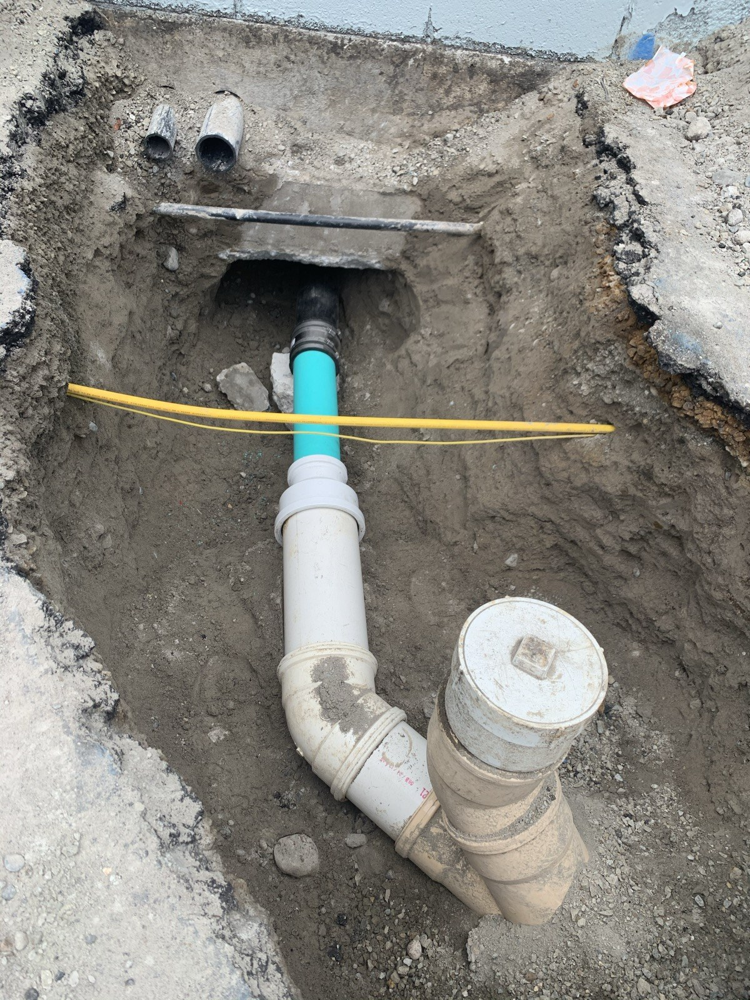
2. 042 · Close-up of an excavated sewer connection and cleanout
The replacement pipe and cleanout stand out clearly from the excavated soil.
Suggested frame: 3:4. Keep the full connection and enough trench context. The crossing utility remains part of the real scene.
Neutral soil and distinct pipe colors; avoid a saturated green treatment.

3. 055 · Crew beside removed clay sewer pipe and replacement pipe sections
People, removed clay pipe and replacement sections explain the work beyond an isolated fitting.
Suggested frame: 3:4. Keep both workers and the removed pipe. Use as a supporting project view; the foreground face is turned away.
Outdoor greens and soil complement the other sewer views.
Other candidate IDs: 030, 031, 041, 057
The set gives a clear replacement connection, a cleanout connection and people with removed pipe. IDs 30 and 31 have lower pipe/soil contrast; ID 41 adds clutter to the same connection as 42; ID 57 obscures pipe sections under a deck.
Drain & sewer / Trenchless sewer repair
drain-and-sewer/trenchless-sewer-repair
No suitable, high-confidence candidate. No substitute from a different service.
Drain & sewer / Drain & sewer: system overview
drain-and-sewer/system-overview
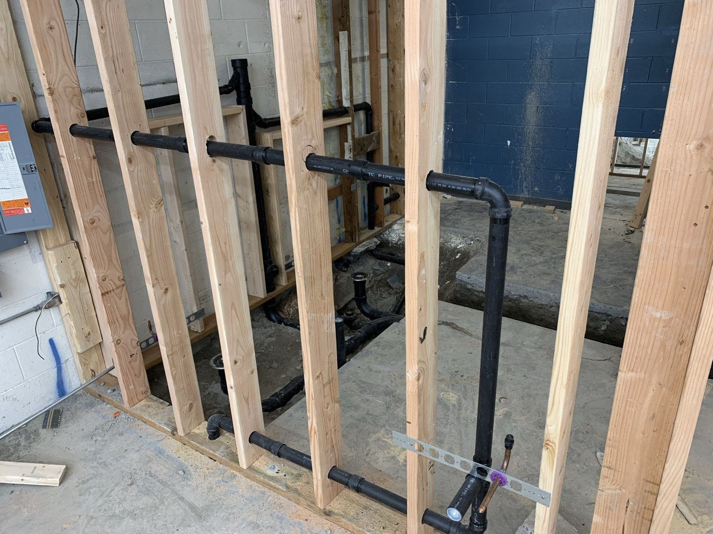
1. 047 · Drain and vent branches through open wall framing
The drainage branches remain clear against the exposed framing, with useful room context.
Suggested frame: 4:3. Keep horizontal and vertical branches; trim empty outer edges rather than the connection points.
Neutral wood and slate pipe; retain construction context.

2. 127 · Horizontal water and waste lines in an open wall
The supply and waste lines are readable across a wider, straighter wall view.
Suggested frame: 4:3. Trim some blank upper wall and lower soil while keeping red/blue supplies and black waste branches.
Warm wood, slate waste pipe and neutral light.

3. 128 · Toilet flange and connected drainage rough-in
The flange and connected drainage branches give a specific, readable floor-connection detail.
Suggested frame: 3:4. Keep the flange and both drainage branches; trim surrounding soil only if connections stay intact.
Construction-stage neutral tones; keep the pipe colors distinct.
Other candidate IDs: 015, 017, 046, 048, 049, 050, 122, 123, 124, 125, 126, 129, 130
The shortlisted views explain wall routing, mixed supply/waste routing and a floor flange connection. Other rough-in frames repeat these subjects or have more tilted framing, overexposure, bare soil or obstructed branches.
Water filtration / Water softeners
water-filtration/water-softeners

1. 028 · Water softener, UV chamber and cartridge filtration bank
The whole treatment layout is readable, with orderly copper routing and little competing clutter.
Suggested frame: 4:3. Retain the black softener, UV chamber and filter bank. A wide frame suits this system.
Neutral wall and natural wood with blue equipment; no grade needed for selection.
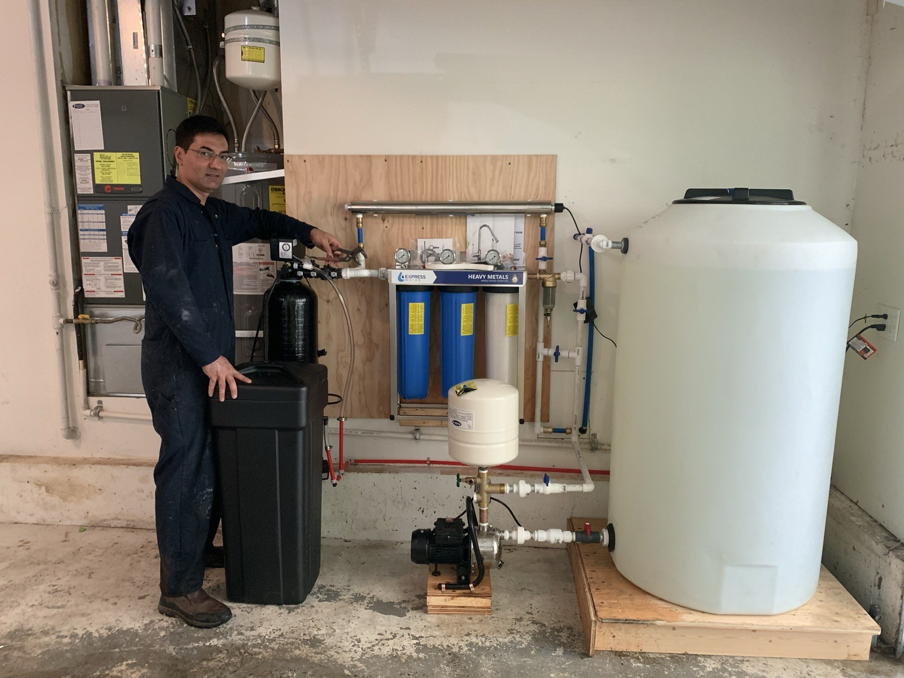
2. 033 · Worker beside water softener, filtration, UV chamber and storage tank
A clear person and complete treatment system add scale, context and an approachable human presence.
Suggested frame: 4:3. Keep the person at left, treatment equipment and storage tank at right. Do not reduce it to an anonymous equipment crop.
Warm-neutral interior; retain natural skin and equipment colors.
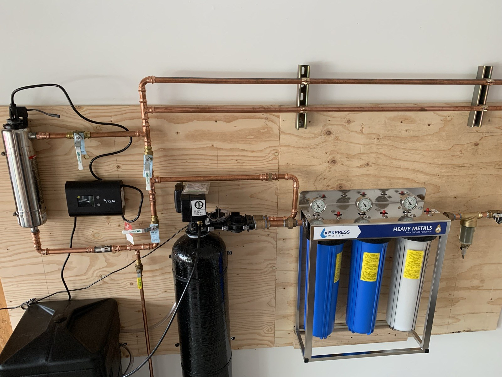
3. 029 · Water softener control head, UV treatment and cartridge filters
A closer view explains the softener head and adjacent treatment connections.
Suggested frame: 4:3. Use as a connection detail; tank bottoms are already cropped. Do not imply a complete-system view.
Same palette as 28; keep this as its detail alternative.
Water filtration / Carbon filters
water-filtration/carbon-filters
No suitable, high-confidence candidate. No substitute from a different service.
Water filtration / Reverse osmosis
water-filtration/reverse-osmosis
No suitable, high-confidence candidate. No substitute from a different service.
Water filtration / Iron and sulfur filters
water-filtration/iron-and-sulfur-filters
No suitable, high-confidence candidate. No substitute from a different service.
Water filtration / UV treatment
water-filtration/uv-treatment

1. 013 · Cartridge filter bank and VIQUA UV treatment assembly
The UV chamber and filter housings are large, clear and framed with their copper connections.
Suggested frame: 4:3. Keep the UV chamber at left and all filter housings; avoid a centered crop that loses the chamber.
Natural copper, wood and blue housings; keep the treatment colors.

2. 028 · Water softener, UV chamber and cartridge filtration bank
The whole treatment layout is readable, with orderly copper routing and little competing clutter.
Suggested frame: 4:3. Retain the black softener, UV chamber and filter bank. A wide frame suits this system.
Neutral wall and natural wood with blue equipment; no grade needed for selection.
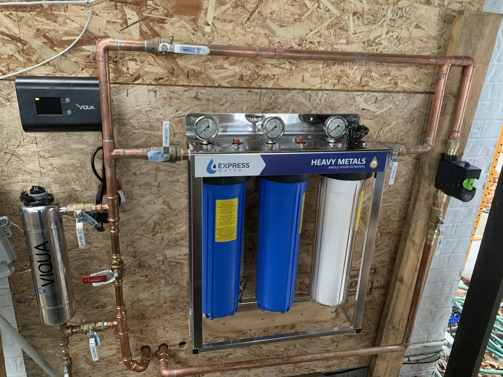
3. 058 · Cartridge filtration bank and VIQUA UV chamber
The UV chamber, gauges, filter bank and bypass form a readable detail composition.
Suggested frame: 3:4. Keep the UV chamber on the left and the bypass at right. Avoid a narrow crop that loses either.
Warm wood and copper with blue equipment match the filtration set.
Other candidate IDs: 010, 011, 012, 019, 029, 033, 059
The UV chamber stays visible in a dedicated filter assembly, a full treatment layout and a closer connection view. Other frames repeat the equipment or introduce cropped people, stronger glare and more unused wall.
Water filtration / Water filtration: system overview
water-filtration/system-overview

1. 028 · Water softener, UV chamber and cartridge filtration bank
The whole treatment layout is readable, with orderly copper routing and little competing clutter.
Suggested frame: 4:3. Retain the black softener, UV chamber and filter bank. A wide frame suits this system.
Neutral wall and natural wood with blue equipment; no grade needed for selection.

2. 013 · Cartridge filter bank and VIQUA UV treatment assembly
The UV chamber and filter housings are large, clear and framed with their copper connections.
Suggested frame: 4:3. Keep the UV chamber at left and all filter housings; avoid a centered crop that loses the chamber.
Natural copper, wood and blue housings; keep the treatment colors.

3. 033 · Worker beside water softener, filtration, UV chamber and storage tank
A clear person and complete treatment system add scale, context and an approachable human presence.
Suggested frame: 4:3. Keep the person at left, treatment equipment and storage tank at right. Do not reduce it to an anonymous equipment crop.
Warm-neutral interior; retain natural skin and equipment colors.
Other candidate IDs: 010, 011, 012, 019, 029, 058, 059, 082, 085, 152
These show readable treatment layouts in neutral surroundings. Other views repeat the installations, crop important vessels or place filtration beside a crowded heating plant.
Heating & cooling / Heating
heating-and-cooling/heating
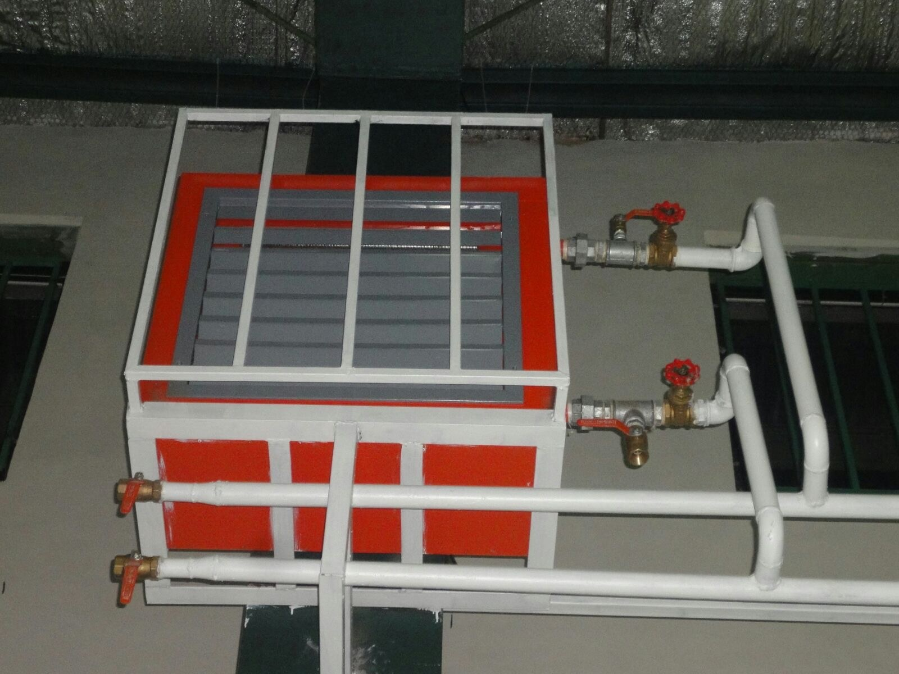
1. 149 · Piped unit heater
The higher-resolution version of the unit-heater view gives the clearest available heating option.
Suggested frame: 4:3. Keep the heater and connecting pipes. Use a supporting technical image; the cage and flash limit a lead residential placement.
Hard flash and red/white equipment; no heavy grade can replace better coverage.
Other candidate IDs: 133
ID 133 shows the same unit-heater composition at 1280 × 960. Keep ID 149's 1600 × 1200 version rather than filling the shortlist with a redundant image.
Heating & cooling / Ventilation
heating-and-cooling/ventilation
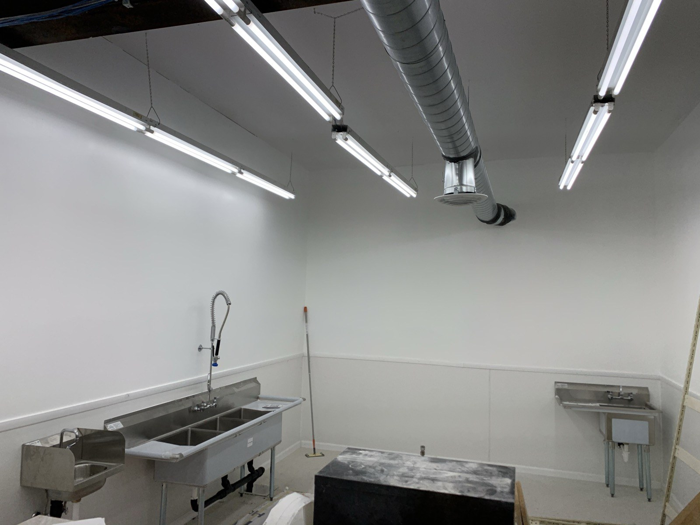
1. 064 · Commercial washroom sinks and ceiling ventilation duct
The ceiling duct is visible in its room context. This is the sole reviewed ventilation candidate.
Suggested frame: 4:3. Keep the ceiling duct and its room relationship. Use a supporting image; it is not an air-conditioner photo.
Neutral interior light; the foreground covered object limits lead-image use.
Heating & cooling / Air conditioning
heating-and-cooling/air-conditioning
No suitable, high-confidence candidate. No substitute from a different service.
Heating & cooling / Installation
heating-and-cooling/installation
No suitable, high-confidence candidate. No substitute from a different service.
Heating & cooling / Maintenance
heating-and-cooling/maintenance
No suitable, high-confidence candidate. No substitute from a different service.
Heating & cooling / Repair
heating-and-cooling/repair
No suitable, high-confidence candidate. No substitute from a different service.
Heating & cooling / Emergency service
heating-and-cooling/emergency-service
No suitable, high-confidence candidate. No substitute from a different service.
Heating & cooling / Heating & cooling: system overview
heating-and-cooling/system-overview
No suitable, high-confidence candidate. No substitute from a different service.
Boilers / Hydronic heating
boilers/hydronic-heating
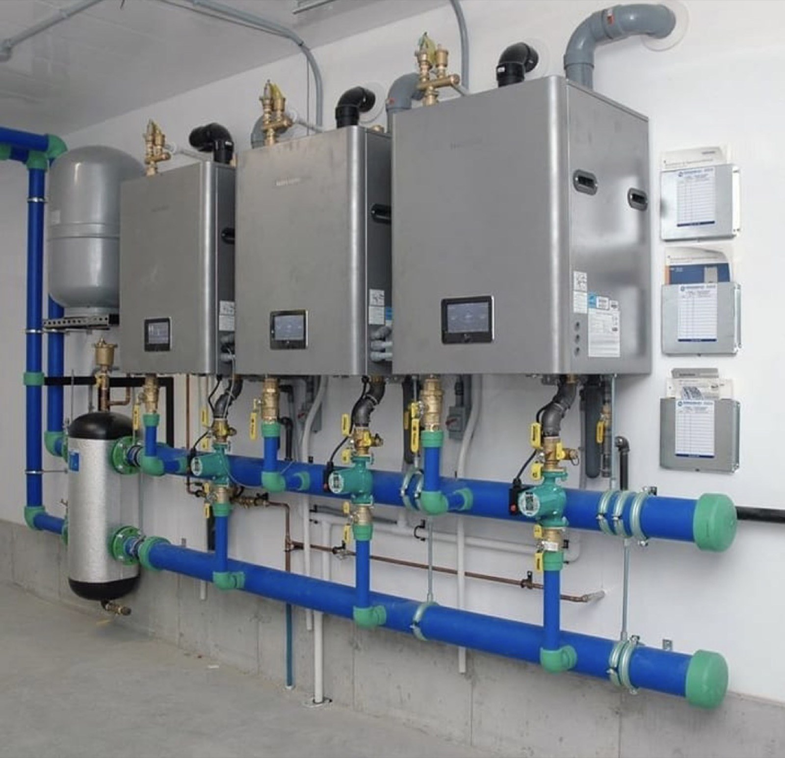
1. 063 · Multiple-appliance hydronic system with circulation pumps and hydraulic separator
The clean, complete hydronic plant shows equipment and routing with strong clarity and even light.
Suggested frame: 1:1. Keep the appliance bank, pumps and hydraulic separator. Favor square/full-frame placement over a shallow banner.
Neutral gray and white, with blue mechanical pipework; retain the genuine palette.
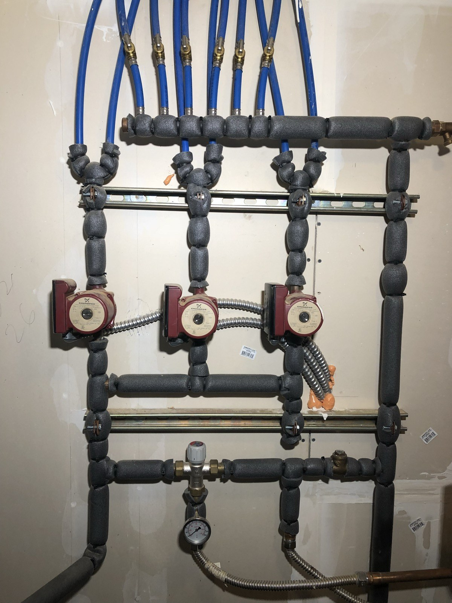
2. 009 · Three-zone hydronic circulation and distribution pipework
The complete pump bank makes zoned hydronic circulation easy to read at small sizes.
Suggested frame: 3:4. Keep all three circulators and their connecting headers.
Neutral wall, dark insulation and blue pipes fit the mechanical set.
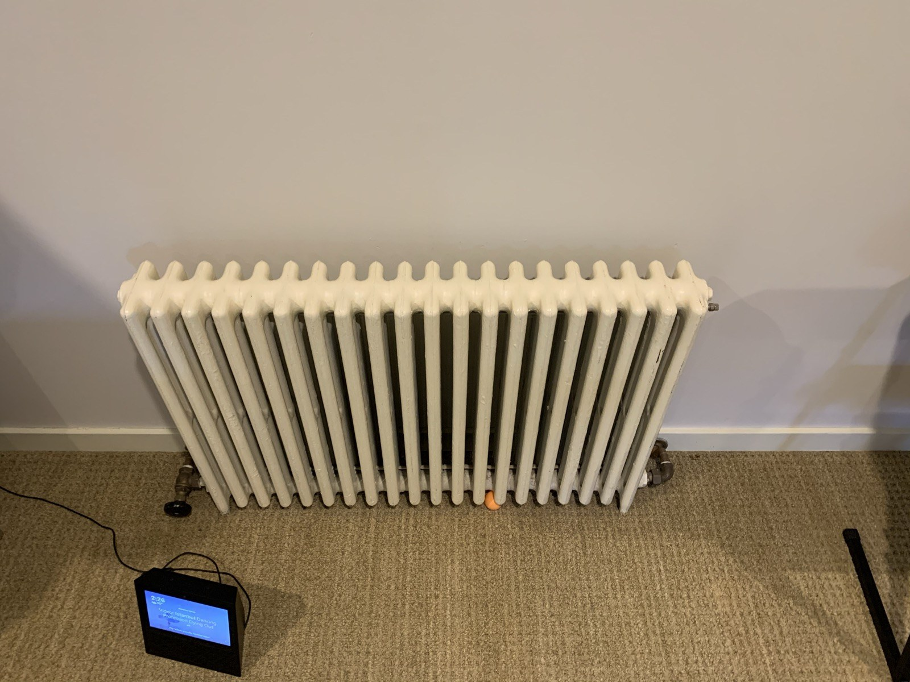
3. 086 · Sectional radiator with pipe connections
The radiator dominates the frame and shows recognizable heating equipment with its valves and pipe connections.
Suggested frame: 4:3. Keep both lower pipe connections. Use the full frame for the service explanation; the loose floor display is part of the original photo.
Warm neutral wall and carpet with a white radiator; no color grade applied.
Other candidate IDs: 008, 014, 032, 038, 069, 070, 071, 072, 078, 079, 080, 082, 083, 084, 098, 099, 100, 101, 102, 103, 104, 105, 106, 107, 108, 109, 110, 111, 112, 113, 114, 115, 116, 117, 118, 119, 120, 140, 143, 144, 145, 146, 147, 161, 170, 171, 172, 173, 174, 175, 180, 181, 182
These show the plant, circulation pumps and a recognizable radiator. ID 14 contains a towel radiator, but the sink dominates the frame; keep it as a plumbing alternative. ID 86 has a loose display and cable on the floor, but the radiator and pipe connections remain the clear subject. Other frames repeat the plant or add clutter and harsh light.
Boilers / Radiant floor heating
boilers/radiant-floor-heating
No suitable, high-confidence candidate. No substitute from a different service.
Boilers / Annual boiler service
boilers/annual-boiler-service
No suitable, high-confidence candidate. No substitute from a different service.
Boilers / Boiler repair
boilers/boiler-repair
No suitable, high-confidence candidate. No substitute from a different service.
Boilers / Boiler replacement
boilers/boiler-replacement
No suitable, high-confidence candidate. No substitute from a different service.
Boilers / Boilers: system overview
boilers/system-overview
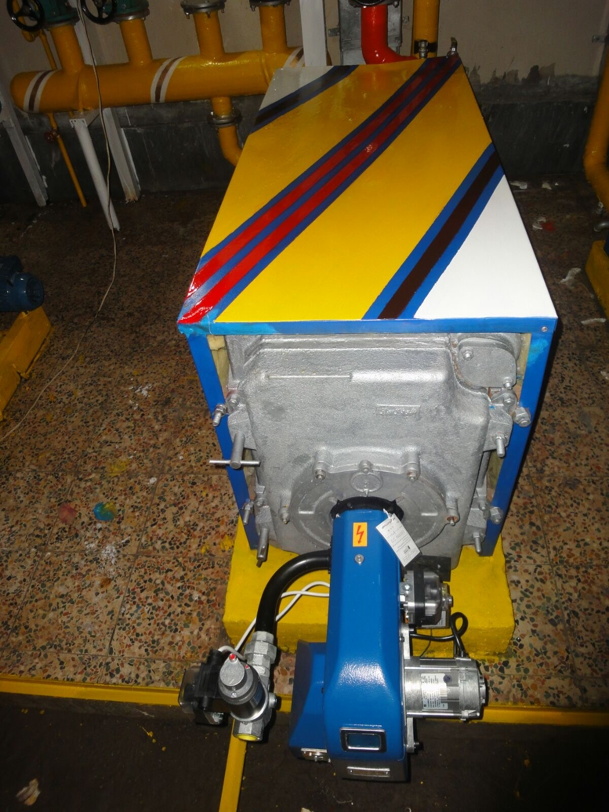
1. 159 · Floor-standing boiler and burner
The higher-resolution boiler/burner composition keeps the equipment clear despite its high camera angle.
Suggested frame: 3:4. Keep the boiler casing and burner together. This industrial view is an alternative, not the residential lead.
Bright yellow/blue equipment; preserve real colors and avoid placing beside subdued residential imagery.
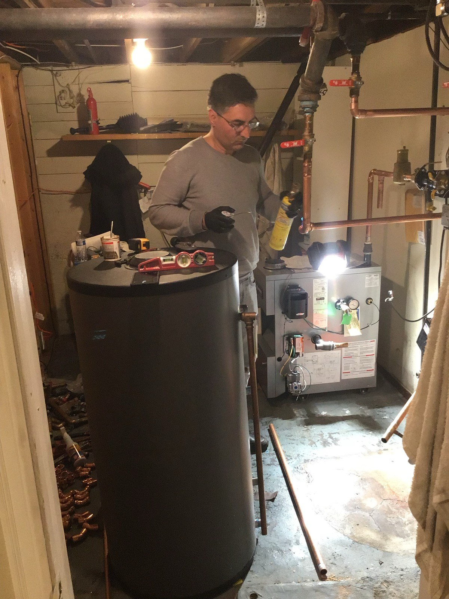
2. 003 · Worker holding a torch beside a floor-standing boiler and storage cylinder
A real worker and boiler remain recognizable; use as a supporting work scene, not the lead equipment image.
Suggested frame: 3:4. Keep the worker, torch and boiler. Trim doorway edges only; do not erase the work-light glare.
Warm light with strong highlights; no filter applied.
Other candidate IDs: 004, 136
ID 136 repeats 159's boiler/burner composition at lower resolution. ID 4 repeats 3's work scene. Keep two distinct options rather than three redundant views.
About / On the job
about/on-the-job
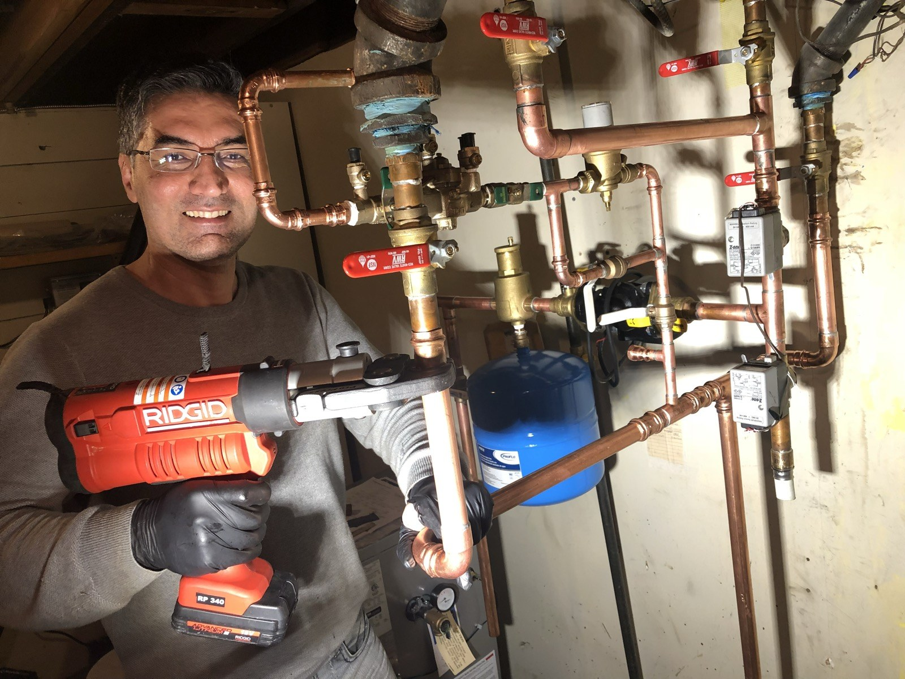
1. 107 · Technician with a press tool beside heating equipment
The smiling face, tool and recognizable pipework make the strongest approachable work portrait.
Suggested frame: 4:3. Protect the face and tool. A tighter crop may trim the outer wall but must retain the pipe connection.
Warm light and natural skin; no stock-style grain or dramatic grade.

2. 033 · Worker beside water softener, filtration, UV chamber and storage tank
A clear person and complete treatment system add scale, context and an approachable human presence.
Suggested frame: 4:3. Keep the person at left, treatment equipment and storage tank at right. Do not reduce it to an anonymous equipment crop.
Warm-neutral interior; retain natural skin and equipment colors.

3. 105 · Technician pressing a copper fitting in a heating loop
The face, press tool and joint show focused work clearly, with natural copper colors.
Suggested frame: 4:3. Keep the face, hand, tool and pipe joint together. This is the action alternative to portrait 107.
Warm copper and work lighting; avoid over-saturating the red tool.
Other candidate IDs: 003, 004, 010, 011, 012, 020, 021, 022, 023, 024, 025, 026, 027, 034, 035, 036, 037, 055, 057, 080, 098, 099, 100, 101, 102, 103, 104, 106, 108, 109, 110, 116, 117, 170, 171, 172, 173, 174, 175, 176, 177, 178, 179, 180, 181, 182
These give a clear smiling work portrait, a person with a complete treatment system and a focused tool-use view. Other frames hide faces, add foreground clutter, use harsher light or repeat these views. IDs 107 and 105 are portrait/action alternatives from the same setting; avoid placing them beside each other.